En esta guía les cuento cómo armar, paso a paso, una sala de billar: piso, paredes y techo con texturas, una mesa con sus cuatro patas, bolas, un taco y varias luces con sombras. Cuando terminen van a tener una sala completa, y con ella hacen su propia versión con temática en la actividad.
Tener Visual Studio Code con la extensión Live Server.
Buscar y descargar sus propias texturas: madera para el piso y la mesa, y ladrillo (o lo que prefieran) para las paredes. Hay sitios con texturas gratis, como ambientcg.com y polyhaven.com. Cada textura suele venir en varias imágenes: la de color, la de rugosidad (roughness) y alguna de relieve (bump, displacement o normal).
Crear una carpeta para el proyecto, por ejemplo sala-billar, con una carpeta texturas adentro (para las imágenes) y dos archivos nuevos: index.html y script.js.
Tener internet: Three.js se carga desde la red.
Abrir siempre el proyecto con Live Server (clic derecho sobre index.html, Open with Live Server).
Los pasos
Paso
Qué se hace
1
La escena base
2
Una luz para poder ver
3, 4 y 5
El piso: forma, textura de color, relieve y rugosidad
6
Las paredes y el techo
7 y 8
La mesa: tablero, paño y bordes
9, 10 y 11
La clase Pata, las bolas y el taco
12, 13 y 14
Las luces, la lámpara y las sombras
15
Revisar y volverla propia
Paso 1: La escena base
Partir de una escena que ya funciona: la misma estructura de las clases anteriores, más un control de cámara.
Las variables, la escena, la cámara y el renderer ya se conocen de las clases anteriores. Lo que se necesita es una escena base que funcione. El JavaScript va en un archivo aparte, no dentro del HTML. En index.html escribir:
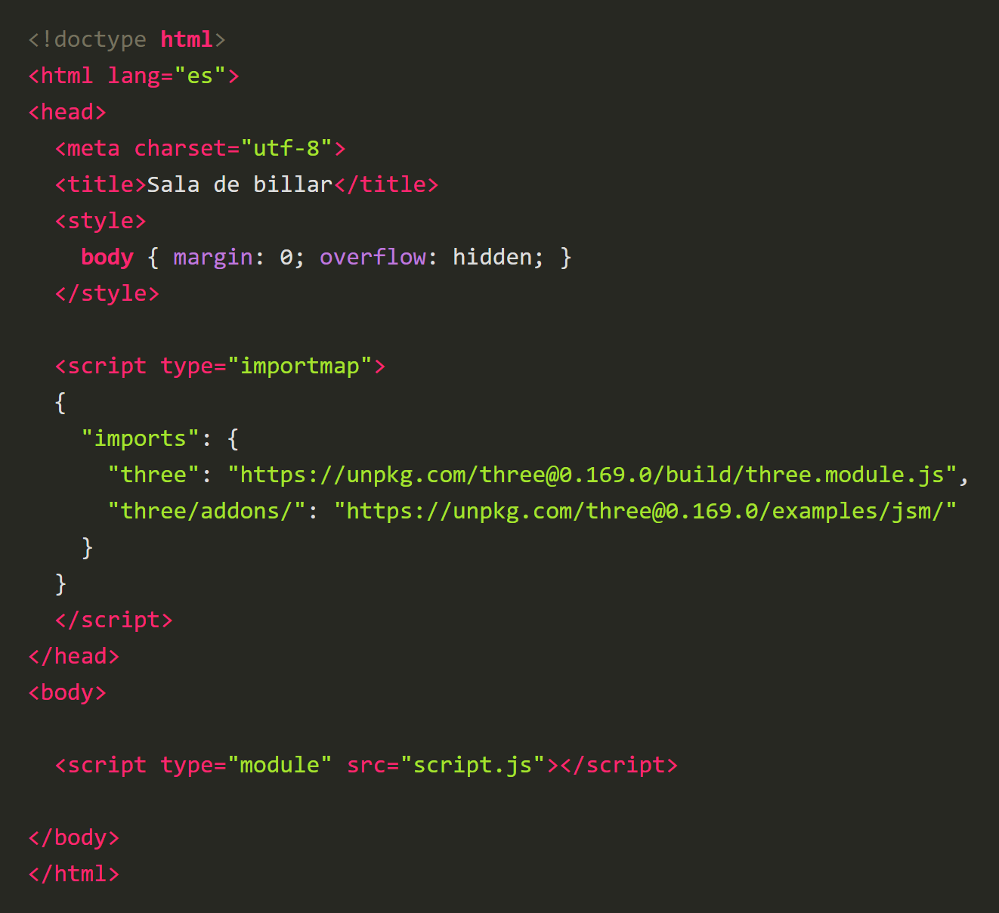
La etiqueta script con type="module" y src="script.js" carga el archivo script.js. El importmap es el mismo de la clase 6: permite escribir import ... from "three" dentro de script.js. Después, en script.js, escribir la escena base:
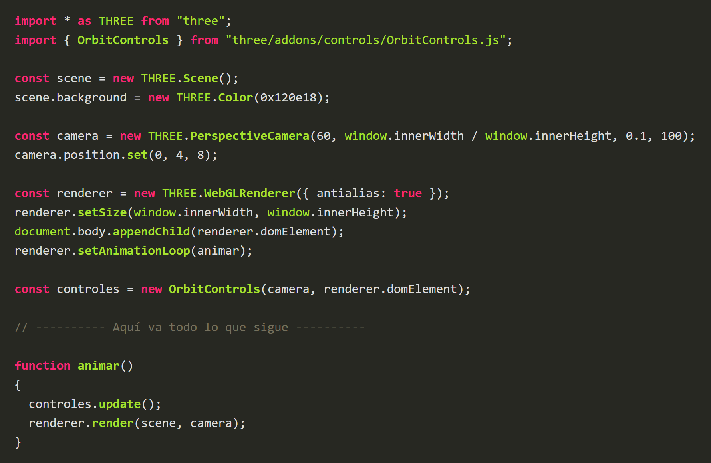
Qué hace cada cosa
renderer.setAnimationLoop(animar): queda arriba, apenas se crea el renderer, como se vio en clase. La función animar se escribe abajo del todo: JavaScript la encuentra igual.
import { OrbitControls }: trae el control de cámara con el mouse. No viene dentro de Three.js: se importa de la carpeta addons.
new OrbitControls(camera, renderer.domElement): permite mover la cámara con el mouse: arrastrar gira alrededor de la escena y la rueda acerca y aleja. Necesita la cámara y el elemento donde está el dibujo.
controles.update(): va dentro de animar, para que los controles se actualicen en cada cuadro.
Todo lo que viene a partir del paso 2 se escribe debajo del comentario "Aquí va todo lo que sigue", en el orden de la guía.
PruebaLa pantalla se ve de color oscuro, sin errores, y la consola (F12) está limpia. Aún no hay nada que mirar.
Si algo falla
Pantalla en blanco y error en la consola: revisar que las llaves y los paréntesis estén cerrados.
Error al cargar script.js o al importar: abrir el proyecto con Live Server, no con doble clic, y revisar que el archivo se llame exactamente script.js.
Paso 2: Una luz para poder ver
Poner luces provisionales: los materiales de este proyecto se ven negros si no hay luz.
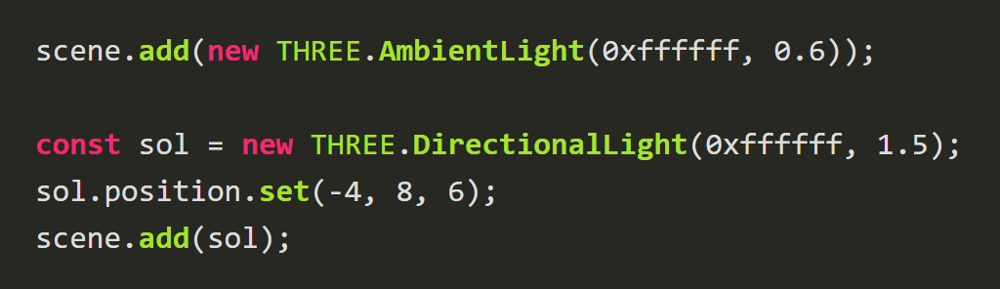
Son las luces de la clase 8: AmbientLight ilumina todo por igual y DirectionalLight ilumina como el sol, con rayos paralelos desde la posición indicada. Más adelante se borran y se reemplazan por la iluminación definitiva (paso 12).
PruebaSigue sin verse nada: todavía no hay objetos.
Paso 3: El piso: un plano acostado
Crear el piso de la sala con un plano grande.
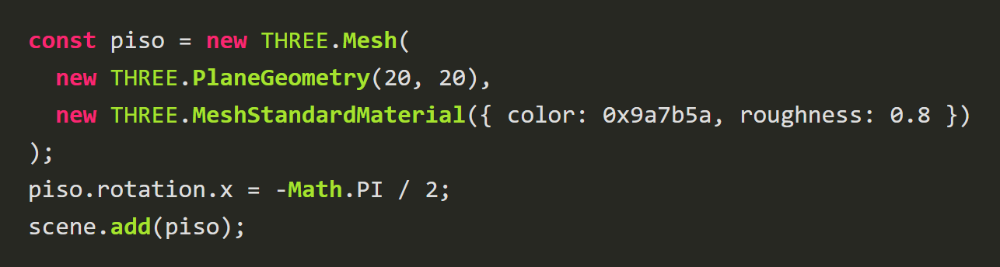
Qué hace cada cosa
PlaneGeometry(20, 20): un plano de 20 de ancho y 20 de fondo. Esas son las medidas que yo uso, pero si quieren una sala más grande o más pequeña, pueden cambiarlas (y entonces cambiar también las medidas de lo que viene después).
MeshStandardMaterial: el material con luz de la clase 8. color es el color base y roughness qué tan mate es (1 = totalmente mate).
rotation.x: el giro alrededor del eje x. El plano nace parado, hay que acostarlo.
Math: es la biblioteca de matemáticas de JavaScript. Math.PI es el número π (3,1416...).
Radianes: los giros en Three.js no se miden en grados sino en radianes: una vuelta completa son 2π y media vuelta (180 grados) es π. Por eso Math.PI / 2 es un cuarto de vuelta (90 grados), y el signo negativo decide hacia qué lado gira. Si prefieren pensar en grados, pueden buscar la forma de convertir grados a radianes y usar el resultado.
PruebaUn piso plano de color café claro sobre el que se puede girar con el mouse.
Si algo falla
No se ve el piso: revisar que esté scene.add(piso). Si se ve solo desde abajo, el signo del giro está al revés.
Paso 4: Textura de color para el piso
Cubrir el piso con una imagen de madera repetida.
Una textura es una imagen que se pega sobre una superficie. Primero se crea el cargador y después se carga la imagen. Cada vez que se necesite una textura nueva, se carga de esta misma manera, una por una. Escribir este bloque encima deconst piso, con el nombre de su archivo:
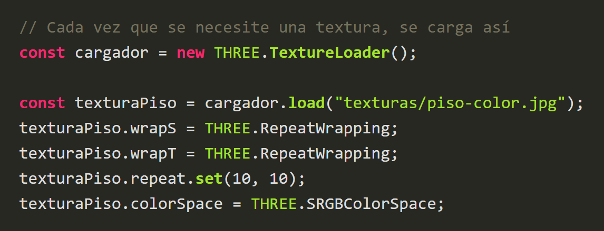
Qué hace cada cosa
new THREE.TextureLoader(): el cargador: el objeto que sabe leer imágenes y volverlas texturas.
cargador.load("texturas/piso-color.jpg"): carga la imagen que está en esa dirección y devuelve la textura. En la dirección va el nombre de su propio archivo, escrita desde la carpeta donde está index.html: si guardaron la imagen en la carpeta texturas, queda "texturas/nombre.jpg". Si la guardan en otra carpeta, cambia la dirección. Revisar mayúsculas y la extensión (.jpg, .png).
wrapS y wrapT: qué pasa cuando la imagen se acaba: S es el eje horizontal y T el vertical. RepeatWrapping significa "volver a empezar", es decir, repetirla en mosaico.
repeat.set(10, 10): cuántas veces se repite: 10 en horizontal y 10 en vertical. Regla: repeat = medida del objeto ÷ medida de un mosaico. El piso mide 20 y si cada tabla ocupa 2, entonces 20 ÷ 2 = 10. Cada textura es distinta, así que hay que probar hasta que se vea natural. Si no se repite, la imagen se ve enorme y estirada.
colorSpace = SRGBColorSpace: le avisa a Three.js que esta imagen es de color. Sin esto los colores se ven lavados.
Ahora, en el material del piso, sustituir el color plano por la textura. Cambiar la línea del material por:
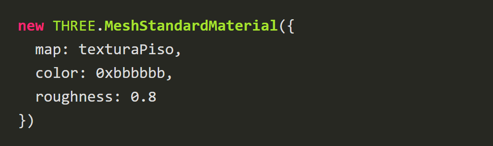
map es la propiedad donde va la textura de color. Aquí color se mezcla con la imagen: un gris (0xbbbbbb) la oscurece un poco; el blanco (0xffffff) la deja tal cual.
PruebaEl piso se ve de tablas de madera pequeñas y repetidas, no de una sola imagen enorme.
Si algo falla
El piso queda gris o sin textura: abrir la consola (F12). Un error 404 indica que la dirección o el nombre del archivo no coinciden con el de su carpeta.
Error de seguridad al cargar la imagen: el proyecto se abrió sin Live Server.
Madera estirada: falta repeat o RepeatWrapping.
Paso 5: Relieve y rugosidad del piso
Agregar dos imágenes más al piso para que la madera tenga relieve y no brille igual en todas partes.
Una textura no tiene que ser solo color: cada imagen puede controlar una propiedad distinta del material. Cada una es una textura aparte: se carga igual que la de color, con el mismo wrapS, wrapT y repeat (o las capas no coinciden). Estas imágenes son datos, no colores, así que no llevan colorSpace. Por ejemplo, la de relieve:
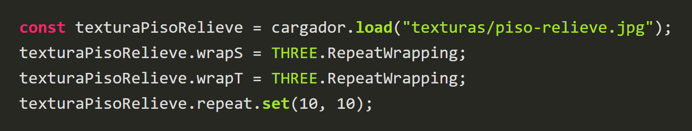
La de rugosidad (texturaPisoRugosidad) se carga de la misma manera: háganla ustedes. Después, cambiar de nuevo el material del piso para que use las dos:
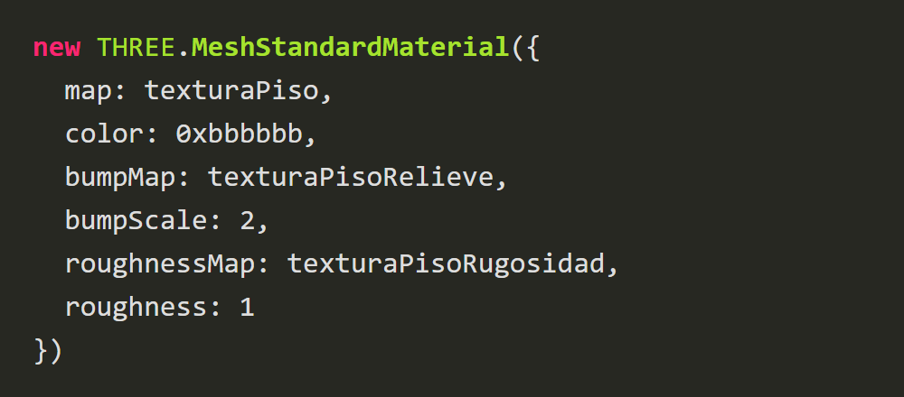
Qué hace cada cosa
bumpMap: imagen en escala de grises: lo claro es "alto" y lo oscuro es "bajo". Con la luz se ve como relieve, aunque el piso sigue plano (relieve falso). Si su set trae una imagen de displacement o height, también sirve; la de normal es otra propiedad (normalMap) y funciona parecido.
bumpScale: cuánto se nota ese relieve. Más grande, más marcado. Prueben el valor hasta que se vea bien.
roughnessMap: imagen que dice qué zonas son más lisas (brillan) y cuáles más rugosas (mates).
roughness: 1: con un roughnessMap, este número multiplica al mapa. En 1 el mapa manda por completo; con valores más bajos el material se vuelve más brillante en general. Prueben ustedes cuál prefieren.
PruebaLa madera ahora tiene vetas marcadas y unas zonas brillan más que otras al girar la cámara.
Si algo falla
El relieve se ve desfasado de la imagen de color: los tres repeat deben ser iguales.
No se nota el relieve: subir bumpScale.
Paso 6: Las paredes y el techo
Cerrar la sala con cuatro paredes y un techo.
La sala es una caja: el piso ya está. Primero se crea el material de las paredes igual que el del piso: una textura de color (con colorSpace) y una de relieve, las dos con el mismo repeat, y un MeshStandardMaterial con map y bumpMap. Las paredes miden 20 x 8, así que el repeat horizontal será mayor que el vertical. Llamarlo materialLadrillo (o como quieran). Después, así se hace una pared:
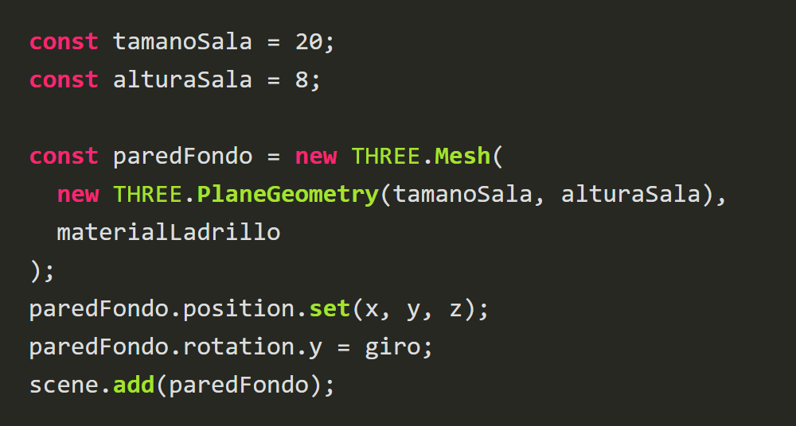
Qué hace cada cosa
tamanoSala y alturaSala: variables con las medidas de la sala (20 de lado y 8 de alto), para no repetir números. Si cambiaron el tamaño del piso, cambiarlas aquí.
position.set(x, y, z): ubica la pared en la escena. x va hacia la derecha, y hacia arriba y z hacia ustedes. El centro del piso es (0, 0, 0).
rotation.y: gira la pared alrededor del eje vertical. Un plano solo se ve por su cara delantera (clase 8, side): una pared mal girada desaparece desde adentro, así que hay que girarla hasta que mire hacia adentro de la sala.
El mismo material: un mismo material puede servir a varias mallas, así no se cargan las imágenes cuatro veces.
Ahora hacer otras tres paredes de estas y el techo (un plano como el piso, pero arriba de todo y mirando hacia abajo). Una vez creadas, moverlas y girarlas para que se acomoden según el esquema y cierren la sala. Los valores de position y rotation se encuentran probando.
PruebaUna sala cerrada: paredes con textura, piso de madera y un techo oscuro. Desde adentro no se ven huecos.
Si algo falla
Una pared no se ve: probablemente mira hacia afuera. Probar con el signo contrario en su rotation.y.
Ladrillos enormes: revisar el repeat.
Paso 7: La mesa: tablero y paño
Armar la base de la mesa: un tablero de madera y, encima, el paño verde.
Dentro de la caja de la sala va la mesa. Primero el material de la madera, creado como el del piso (color y relieve, con MeshStandardMaterial). Llamarlo materialMaderaLarga. Una caja tiene un detalle: pone la imagen entera en cada una de sus 6 caras, así que el repeat depende de la medida de la cara larga. Para el tablero y los bordes largos sirve un repeat de unas 4 veces en horizontal y 1 en vertical. Después, escribir las medidas, el tablero y el paño:
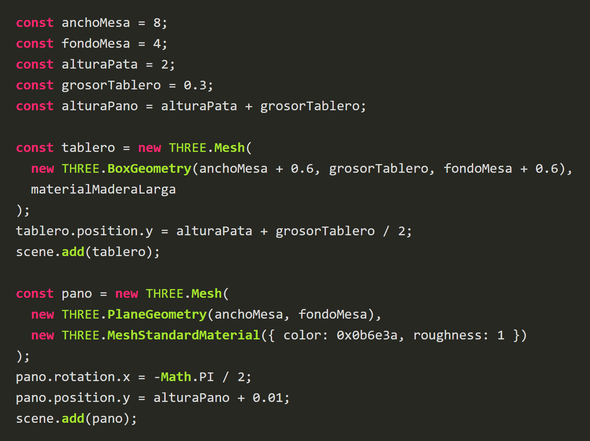
Qué hace cada cosa
BoxGeometry(ancho, alto, fondo): una caja. El tablero mide 8,6 de ancho y 4,6 de fondo, un poco más que el paño para dejar espacio a los bordes. Sus medidas también se pueden cambiar.
alturaPano: la altura de la superficie de la mesa: lo que miden las patas más el grosor del tablero. Las bolas se apoyan ahí.
position.y = alturaPata + grosorTablero / 2: el centro del tablero queda a la mitad de su grosor por encima de donde terminan las patas.
pano.position.y = alturaPano + 0.01: el paño es un plano que queda justo encima del tablero. El 0,01 de más evita que los dos se peleen por el mismo lugar y parpadeen.
PruebaUna plataforma de madera con un paño verde encima, flotando en el aire (todavía no tiene patas).
Si algo falla
El paño no se ve: probablemente quedó debajo del tablero. Revisar alturaPano + 0.01.
Paso 8: Los bordes de la mesa
Cerrar la mesa con cuatro bordes de madera.
Así se hace un borde (el del fondo):
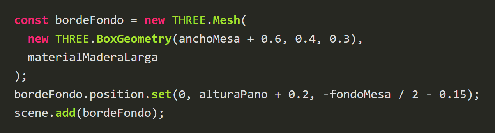
Está a alturaPano + 0.2 (la mitad de su alto de 0,4, para que su base quede sobre el tablero) y separado del centro la mitad del fondo del paño más la mitad de su grosor (0,15).
Hacer otros tres bordes: el del frente (igual, pero al otro lado) y los dos de los extremos. Los de los extremos son más cortos (la caja es BoxGeometry(0.3, 0.4, fondoMesa)), así que necesitan otro material de madera con otro repeat (por ejemplo 2 en horizontal): si usaran el mismo, la veta se vería aplastada.
PruebaLa mesa ya tiene un marco de madera alrededor del paño.
Si algo falla
Un borde queda dentro del paño o se separa de la mesa: revisar su position.set con el esquema de la mesa.
La veta se ve muy estirada en un borde: revisar que cada tamaño de borde use el material que le corresponde.
Paso 9: La clase Pata
Hacer las cuatro patas con una clase en lugar de escribir el mismo código cuatro veces.
Las patas son iguales: cambian solo de lugar. Esto ya se sabe resolver con una función (como el crearBola de la clase 8). Antes, crear el materialPata (madera, con un repeat que haga que la veta corra a lo largo de la pata). Esta es la función:
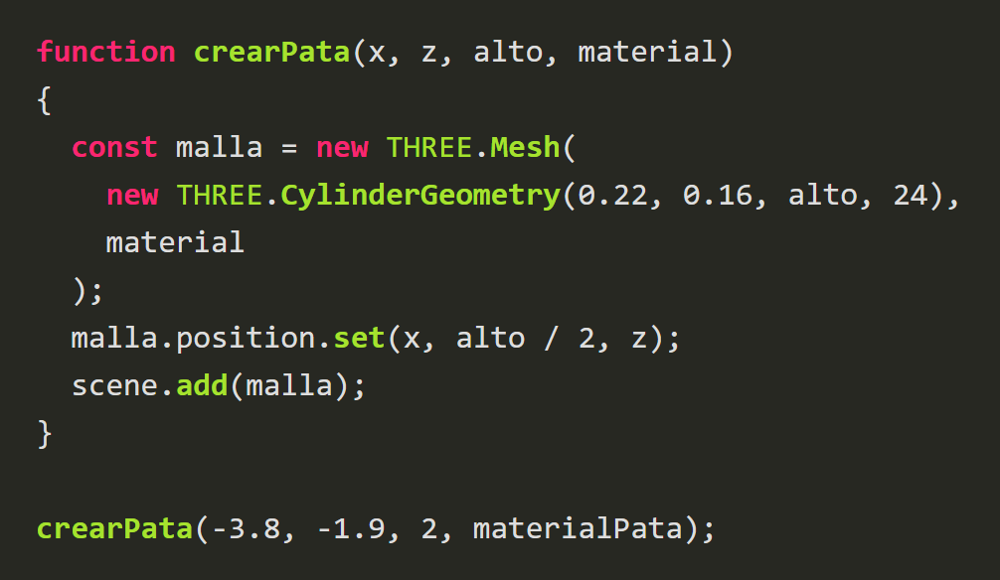
Una clase es una función que fabrica objetos, con nombre propio y con memoria. Es la misma pata, escrita como clase:
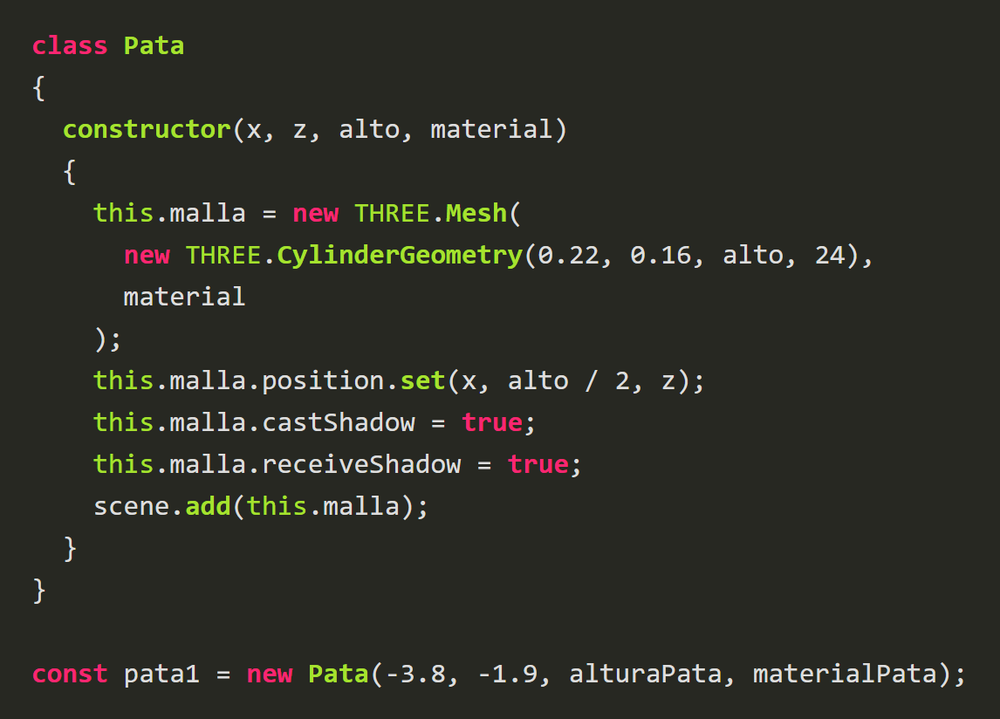
Qué hace cada cosa
class Pata: el molde. Por convención, el nombre de una clase empieza con mayúscula.
constructor(x, z, alto, material): es la función que se ejecuta al fabricar una pata. Los parámetros son los datos que cambian de una pata a otra. El cuerpo del constructor es el cuerpo de la función de antes.
this: significa "este objeto". this.malla guarda la malla dentro de la pata: en la función era una variable local (const malla) que desaparecía; con this queda guardada y se puede usar después, desde afuera (por ejemplo pata1.malla.position.y).
new Pata(...): fabrica una pata nueva y ejecuta el constructor con los datos que se le pasan. Es el equivalente de llamar a la función. Sin el new, da error.
castShadow y receiveShadow: son para las sombras. Se explican en el paso 14: por ahora se dejan escritas y no hacen nada que se vea.
Ahora crear las otras tres patas, una en cada esquina de la mesa.
PruebaCuatro patas de madera oscura, una en cada esquina, que sostienen la mesa.
Si algo falla
No aparece nada: revisar que la línea lleve new antes de Pata.
Una pata se ve torcida o en otro lugar: revisar los signos de las coordenadas x y z de esa pata.
Paso 10: Las bolas
Fabricar las bolas con una clase, igual que las patas.
Así como se hizo una clase Pata que recibe unos datos, ahora hacer una clase Bola que reciba el color, la posición (y, si quieren, el radio o lo que decidan ponerle). El cuerpo del constructor es lo que se haría con una sola bola: una esfera con su material, ubicada sobre el paño y agregada a la escena. Cuando la clase esté terminada, llamarla con new para crear todas las bolas que quieran: 7, 16 o las que prefieran. Con la clase es igual de fácil hacer 7 que 16.
El material de las bolas tiene propiedades nuevas:
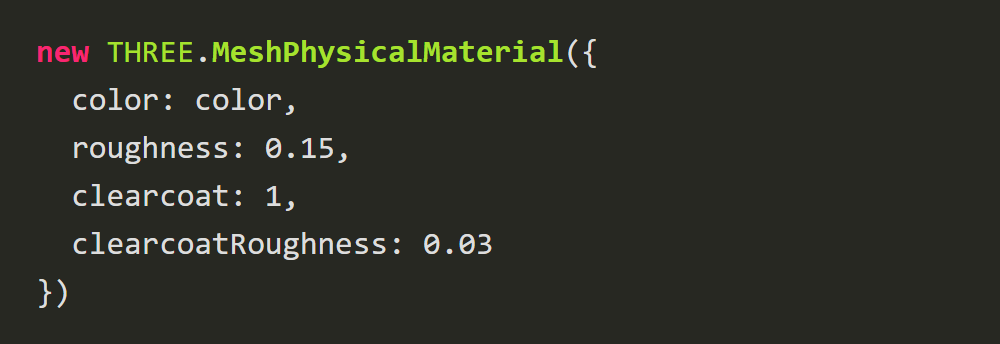
Qué hace cada cosa
SphereGeometry(radio, 48, 48): la esfera. Los dos 48 son cuántos segmentos tiene: más segmentos, más redonda.
MeshPhysicalMaterial: es como el Standard, pero con extras, como el clearcoat.
clearcoat: una capa de barniz encima (de 0 a 1), como en las bolas de resina.
clearcoatRoughness: qué tan liso es ese barniz: bajo se ve como un espejo.
Altura sobre el paño: para que la bola quede apoyada, su centro tiene que estar a un radio por encima del paño. Si se pone solo la altura del paño, queda medio enterrada.
PruebaLas bolas que hayan decidido hacer, brillantes y apoyadas sobre el paño, sin encimarse.
Si algo falla
Bolas medio hundidas: revisar la altura. Bolas encimadas: revisar sus coordenadas x y z.
No aparece nada: revisar que se haya llamado la clase con new.
Paso 11: El taco
Poner un taco apoyado cerca de la bola blanca.
El taco es uno solo, así que no necesita clase: un cilindro bien ubicado. Se puede dejar así de sencillo o hacerlo más artístico (una punta de otro color, una cinta, detalles).
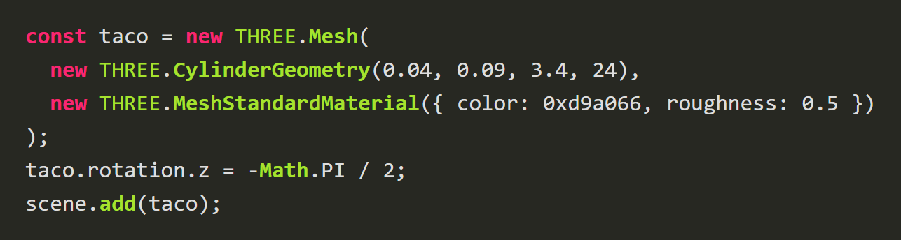
Qué hace cada cosa
CylinderGeometry(radioArriba, radioAbajo, alto, ...): un cilindro. Con dos radios distintos queda en forma de cono cortado: el taco es más delgado en la punta. Estas medidas también se pueden cambiar.
rotation.z: el cilindro nace parado (como el plano). Un cuarto de vuelta (Math.PI / 2) lo acuesta. El signo decide hacia qué lado queda la punta.
Después, ubicarlo con position.set cerca de la bola blanca, apuntándole, y un poco por encima del paño (la punta a la altura del centro de la bola).
PruebaUn taco de madera apoyado cerca de la bola blanca, apuntándole.
Si algo falla
El taco queda atravesando la mesa o los bordes: subir un poco su altura (y) o moverlo.
Paso 12: Las luces del ambiente
Cambiar las luces provisionales por una iluminación de sala de billar.
Borrar las luces provisionales del paso 2.
Escribir las luces generales:
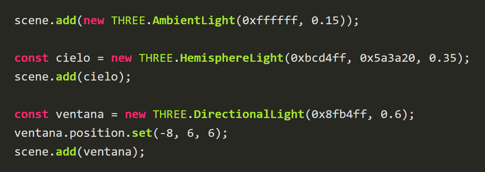
Y dos luces cálidas en la pared del fondo, cada una con una bolita brillante para que se vea. Así se hace la primera:
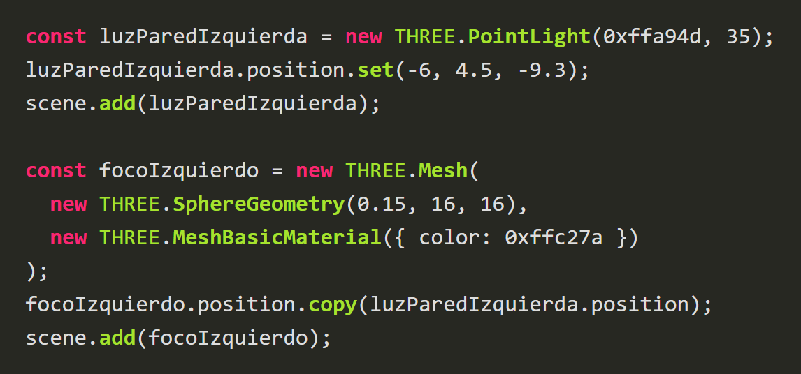
Hacer otra igual al otro lado de la pared.
Qué hace cada cosa
AmbientLight(color, 0.15): una luz base muy suave, para que nada quede completamente negro.
HemisphereLight(colorArriba, colorAbajo, intensidad): pinta de un color lo que mira hacia arriba (azul cielo) y de otro lo que mira hacia abajo (café del piso). Da un ambiente más natural.
DirectionalLight: aquí es la luz fría de una ventana: viene desde la posición indicada, con rayos paralelos.
PointLight(color, intensidad): una bombilla que ilumina en todas direcciones desde un punto. Necesita intensidades altas porque se debilita con la distancia.
MeshBasicMaterial: material que no necesita luz: la bolita siempre se ve brillante, como una bombilla.
position.copy(...): copia la posición de otro objeto: la bolita queda justo donde está la luz.
PruebaLa sala queda en penumbra, con manchas de luz naranja cerca de las luces de pared.
Si algo falla
Todo muy oscuro: subir un poco la intensidad de la HemisphereLight (el último número).
No se ven las luces de pared: girar la cámara y revisar que su posición quede dentro de la sala.
Paso 13: La lámpara colgante
Colgar una lámpara sobre la mesa que la ilumine con un cono de luz.
Primero la luz:
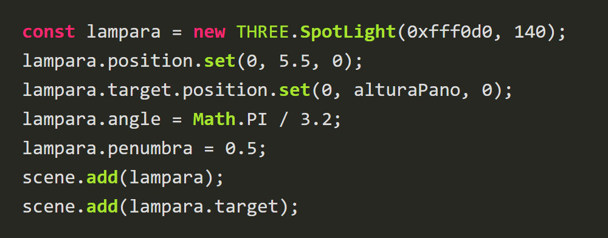
Después, para que parezca una lámpara, una pantalla (un cono abierto):
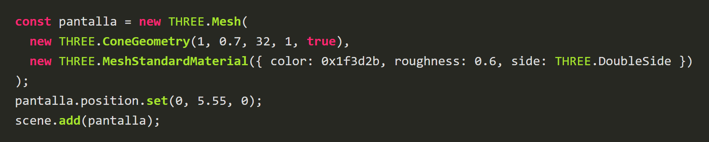
Y por último, un cable (un cilindro muy delgado que sube hasta el techo) y una bombilla (una esfera con MeshBasicMaterial): hacerlos ustedes.
Qué hace cada cosa
SpotLight(color, intensidad): un foco, como una lámpara de techo: ilumina en forma de cono. Necesita una intensidad alta (cerca de 100).
angle: qué tan abierto es el cono.
penumbra: qué tan suave es el borde del cono: 0 es un corte duro y 1 es muy difuso.
target: el punto hacia el que apunta el foco. También se agrega a la escena (scene.add(lampara.target)).
ConeGeometry(radio, alto, segmentos, ..., true): un cono. El true final lo deja abierto, sin tapa, como la pantalla de una lámpara.
side: THREE.DoubleSide: el material se ve por las dos caras (clase 8): así se ve la pantalla por dentro y por fuera.
PruebaUn cono de luz cálida cae sobre el paño y las bolas brillan. Todavía no hay sombras.
Si algo falla
La mesa sale oscura: revisar que lampara.target también esté agregado a la escena.
Paso 14: Las sombras
Activar las sombras para que las bolas, el taco y las patas dejen de verse flotando.
Para que haya sombras hacen falta tres interruptores: el renderer las activa, la luz las proyecta y los objetos proyectan o reciben. Escribir debajo de todo lo demás:
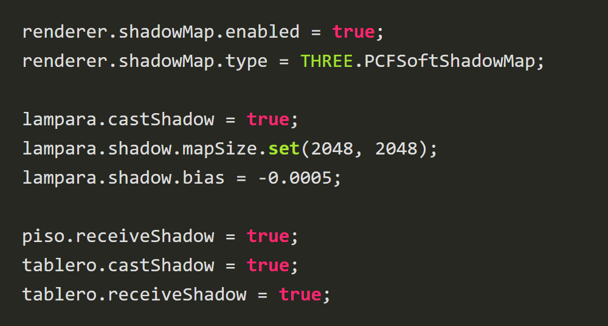
Qué hace cada cosa
renderer.shadowMap.enabled: el interruptor general. El shadowMap es una "foto" que la luz toma de la escena desde donde está: lo que se ve en la foto recibe luz y lo que queda detrás queda en sombra.
lampara.castShadow: esta luz proyecta sombras. Cada luz con sombra tiene un costo, por eso solo se activa en la lámpara.
shadow.mapSize: la resolución de esa foto. Poca resolución da sombras pixeladas; 2048 se ve bien.
shadow.bias: un número negativo muy pequeño que evita rayas raras sobre las superficies.
castShadow (objeto): "yo tapo la luz": el objeto proyecta sombra.
receiveShadow (objeto): "sobre mí se ve la sombra": el objeto recibe sombras. Un objeto puede hacer las dos cosas, como el tablero.
Ahora hacer lo mismo con los demás objetos: los que tapan la luz (bolas, taco, bordes) y los que reciben la sombra (el paño). Las patas ya lo tienen escrito adentro de su clase.
PruebaLas bolas, el taco y las patas proyectan su sombra sobre el paño y el piso. Para ver qué hace cada interruptor, desactivar una línea con //, recargar y volverla a activar.
Si algo falla
No hay sombras: revisar que el renderer, la lámpara y el objeto tengan su interruptor en true.
Sombras pixeladas: revisar que el mapSize sea 2048.
Paso 15: Revisar y volverla propia
Comprobar que la sala está completa y empezar a darle una temática propia.
Lista de revisión
Piso, 4 paredes y techo, con texturas.
Mesa con bordes y cuatro patas hechas con la clase Pata.
Bolas hechas con la clase Bola y un taco.
Por lo menos seis luces, una con sombras.
Texturas con el repeat bien calculado y por lo menos dos mapas además del color.
Para su temática
Cambiar colores, texturas y luces: un salón vaquero, un casino, el espacio, un bar de playa, algo medieval.
Para cambiar el color del paño, sustituir el material por otro color, por ejemplo:
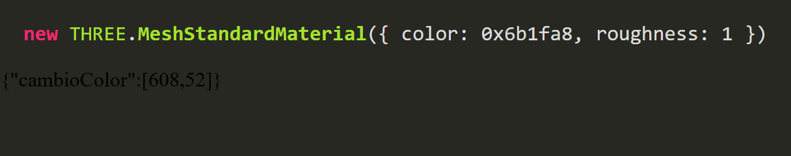
Probar mapas nuevos (normalMap, aoMap, displacementMap) en alguna superficie, y ajustar el repeat según la medida de cada objeto.
La entrega
La actividad se entrega con dos cosas: la carpeta del proyecto (con index.html, script.js y la carpeta texturas) y un timelapse de ustedes haciéndola.
Grabar la pantalla completa; no vale compartir solo la ventana de Visual Studio Code.
Sin cortes ni ediciones: un solo video grabado.
Se puede acelerar hasta 4 veces la velocidad, como máximo.